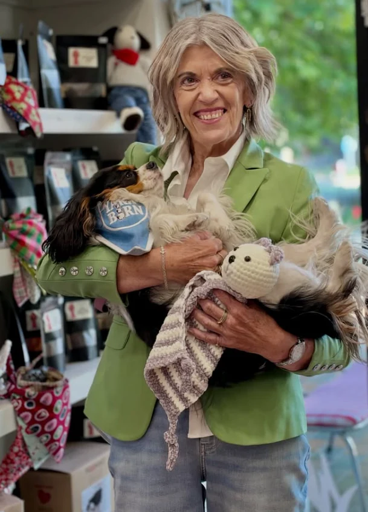
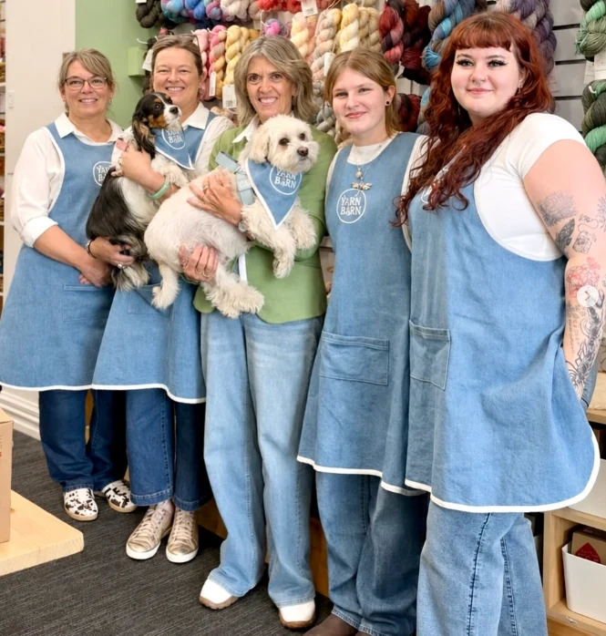

Our story
Meet Libby.
Libby started The Yarn Barn to give Canberrans a place to make things together and get to know one another.
At 11, Libby began making her own clothes with encouragement from her mum. Over the years she tried pottery, painting and quilting before crochet became a favourite. As a single mum, making things with friends was a way to stay connected.
While recovering from knee surgery, Libby crocheted two baby blankets and decided to act on an idea she’d carried for years. She wanted a shop where beginners could pull up a chair alongside experienced makers and pass on skills across generations.
Read Libby’s story in Region Canberra

Come as you are.
Drop by for a chat, ask for help with a tricky stitch or find out how to share your craft with others. You’re welcome to pull up a chair even if you’re just looking.
Visit the shop